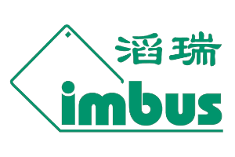
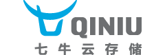
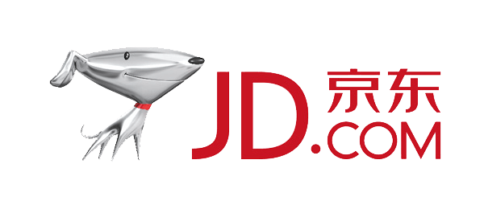
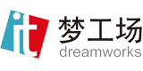

赞助单位
感谢赞助商支持, 是他们使本次大会成为可能
金赞助商
-
Sauce Labs is a cloud-hosted, web and mobile application testing company based in San Francisco, California. Founded by Jason Huggins, the creator of Selenium, Sauce Labs lets users run Selenium, Appium, and JavaScript unit tests across 450+ browser and OS platforms at scale without setting up or maintaining dedicated testing infrastructure.
-

北京蓝海讯通科技有限公司，即 OneAPM，是中国基础软件领域的新兴领军企业。专注于提供新一代应用性能管理软件和服务，帮助用户降低 IT 成本，提高业务生产力。产品适用于复杂的现代应用程序生产环境，提供端到端应用性能管理、移动端和浏览器真实用户体验分析、业务交易实时分析。 经过 7 年的技术与产品积累与沉淀，OneAPM 能够提供本地化部署模式和 SaaS 模式，支持所有主流编程语言和框架，帮助企业用户和开发者轻松实现：缓慢的程序代码和 SQL 语句的实时抓取。 OneAPM 也是全球首家可以同时从系统服务层、应用层、用户体验层、业务交易层提供性能管理产品的公司。
-

fir.im 为移动开发者提供极速测试发布，实时收集和分析应用崩溃、用户反馈收集等一系列开发测试效率工具服务，开发者可将更多精力放在产品的开发和应用的优化上。fir.im 追求简洁极致的 UI 与用户体验，并因此受到国内外许多开发者的欢迎。目前 App Store 最新的中国区 Top 200 中，有 40% 的应用在使用 fir.im 的工具服务。
-

上海滔瑞信息技术有限公司(imbus Shang -hai ) 是德国知名软件测试企业 imbus AG的中国子公司，于2005年进入中国上海。滔瑞公司致力于为客户提供高质量的ISTQB培训,需求工程,测试培训，测试外包,ISTQB认证服务，ISTQB软件测试培训与咨询，软件测试管理工具与解决方案。
银牌赞助商
-

七牛云存储是专为移动时代开发者打造的公有云存储平台。公司成立于2011年，由国内云存储行业领军人物之一的许式伟创立，致力于为开发者提供在线数据的安全托管、传输加速以及云端处理的服务。七牛云存储提供了在线数据托管，加速，以及富媒体处理的服务。目前，七牛已经为大量移动互联网，web 2.0, 媒体，电商以及游戏等领域的知名企业提供了全方位的解决方案与服务。
-

京东（JD.com）是中国最大的自营式电商企业，2015年第一季度在中国自营式B2C电商市场的占有率为56.3%。目前，京东集团旗下设有京东商城、京东金融、拍拍网、京东智能、O2O及海外事业部。2014年5月，京东在美国纳斯达克证券交易所正式挂牌上市，是中国第一个成功赴美上市的大型综合型电商平台，与腾讯、百度等中国互联网巨头共同跻身全球前十大互联网公司排行榜。2014年，京东市场交易额达到2602亿元，净收入达到1150亿元。
-

IT梦工场是中讯环亚（北京）科技有限公司旗下专注培训咨询服务高端品牌，是集培训、咨询、研发为一体，致力于提升企业IT和管理能力的专业服务机构。用先进的管理理念、方法、技术、工具在企业中的推广应用，帮助企业导入先进的技术和科学的研发管理方法，成就企业的创新梦想。我们源自IT，创新在全领域。
-
悟空租车是一家以移动互联网技术为依托，专注于汽车共享租赁的出行服务平台。由五位汽车行业及IT资深高管、北大/清华MBA同学联合创立悟空租车-高品质的汽车租车平台，采用全时托管模式。 悟空租车为租客和车主打造车辆共享平台。
合作社区


媒体支持
-

软件正在改变世界。InfoQ 成立于2006年。我们为了促进软件开发领域知识与创新的传播而创建了 InfoQ。为了实现这个目标，我们致力于提供中立的、由技术实践者主导的会议、内容与在线社区。
-

清华大学出版社成立于1980年6月，是由教育部主管、清华大学主办的综合出版单位。
-

北京华章图书信息有限公司是机械工业出版社与(美国)万国图文信息有限公司共同投资建立的合资企业,主要从事科技、经管、外语领域的图书出版服务业务。